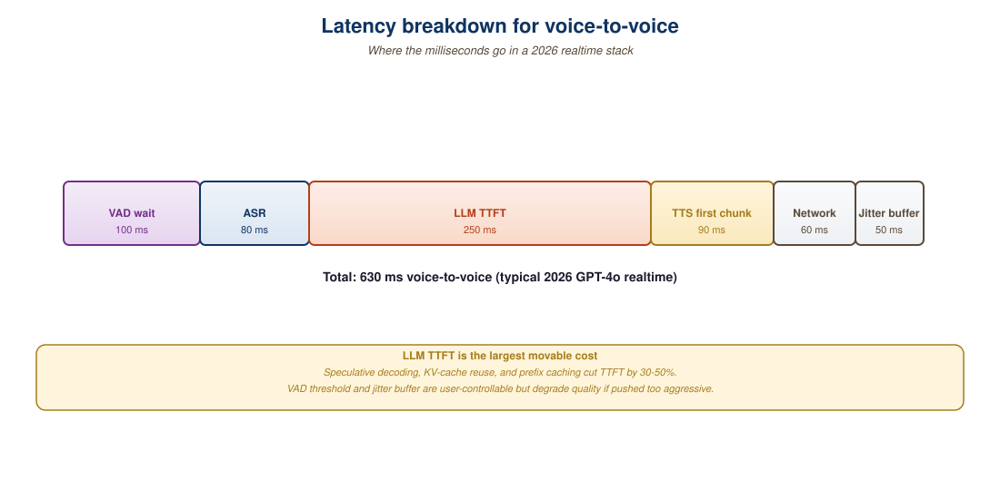
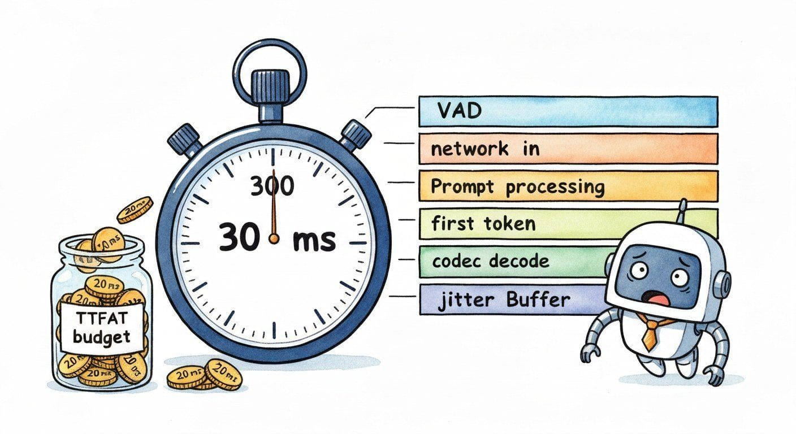
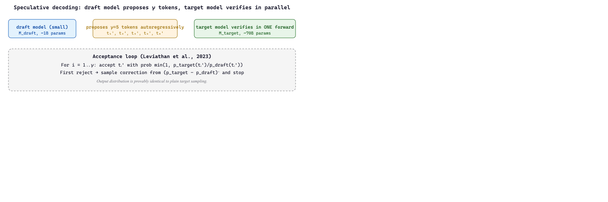

"In a realtime audio system, every token costs you 20 milliseconds of someone's life."
Echo, Latency-Allergic AI Agent
Latency in a streaming audio LLM is determined by the token rate of the audio codec, the time-to-first-audio-token (TTFAT) of the model, and the cumulative network and buffer overhead. Voice agents live or die on this number: an LLM-driven conversational agent that takes 1.5 seconds to start speaking feels broken, even if the content is perfect. This section unpacks the math: how many audio tokens per second a typical codec emits, what that means for an LLM context window's cost, and how to engineer the loop so that the first audible byte reaches the user under 300 ms. We also cover the tuning levers, codec frame size, VAD threshold, beam vs greedy sampling, that move the latency budget without changing the model.
Prerequisites
This section assumes the audio-codec tokenization from Section 20.1, the LLM-inference cost mechanics from Section 9.1, and the realtime-API platforms from Section 39.3.

39.4.1 The Audio Token Rate Equation
An audio LLM emits about 50 tokens per second of voice in real time. That number is determined by codec frame size, not model size, which means the rate-limiting step for voice latency is almost never the model and almost always the buffer that smooths jitter across a flaky cellular link. The biggest model in the world cannot fix bad WiFi.

Native realtime models tokenize audio with a neural codec. The codec emits tokens at a fixed rate per second, typically expressed as token rate $r$ (tokens/sec) times codebooks per frame $C$. For example, GPT-4o Realtime uses a SoundStream-derived codec at approximately 25 Hz frame rate with 8 codebooks per frame, giving 200 tokens/sec per direction. SpeechTokenizer at 50 Hz with 8 codebooks gives 400 tokens/sec.
The cost implications are sharp. For a typical 1-minute audio turn:
$$ \text{tokens} = r \times C \times 60 $$
At 200 tokens/sec, one minute = 12,000 tokens. A 20-turn conversation at 30 seconds per turn = 120,000 audio tokens of context. Compared to text (200-300 tokens per turn typical), audio is 50 to 100x more token-hungry. This is why audio realtime APIs are 10 to 20x more expensive per minute than the equivalent text-only API call.
Audio carries a lot of bits per second that text does not: pitch, timbre, prosody, breath, micro-pauses. A neural audio codec has to represent all of that in discrete tokens. Even aggressively-quantized codecs land at 200 to 400 tokens/sec/direction. Compared to text's natural ~5 to 15 tokens per second of equivalent linguistic content, you are paying for the paralinguistic richness. The product question is whether your application needs that richness: if not, a pipeline architecture (Whisper transcript + text LLM + TTS) is 10x cheaper at comparable text quality.
39.4.2 Time-to-First-Audio-Token (TTFAT)
TTFAT is the user-perceived latency metric. It decomposes as:
$$ \text{TTFAT} = t_{\text{vad}} + t_{\text{net,in}} + t_{\text{prompt}} + t_{\text{first\_token}} + t_{\text{codec\_decode}} + t_{\text{net,out}} + t_{\text{jitter\_buf}} $$
Concrete numbers for GPT-4o Realtime on a US user with reasonable network:
| Term | Typical (ms) | Best Case (ms) | Lever to Reduce |
|---|---|---|---|
| $t_{\text{vad}}$ end-of-turn detection | 400 | 200 | Lower VAD silence threshold |
| $t_{\text{net,in}}$ last audio chunk to server | 50 | 20 | Geographic routing, smaller frames |
| $t_{\text{prompt}}$ context processing | 100 | 40 | Shorter prompts, prompt caching |
| $t_{\text{first\_token}}$ first audio token generation | 150 | 80 | Smaller model, speculative decoding |
| $t_{\text{codec\_decode}}$ | 20 | 10 | Codec choice (hardware-accelerated) |
| $t_{\text{net,out}}$ first audio frame to client | 50 | 20 | Geographic routing |
| $t_{\text{jitter\_buf}}$ client-side buffering | 80 | 40 | Smaller jitter buffer, riskier playback |
| Total TTFAT | 850 ms | 410 ms | (End-of-turn to first audible byte) |
39.4.3 VAD Tuning and Smart End-Pointing
The VAD silence threshold is the largest single tuning knob. Reducing it from 600 ms to 300 ms saves 300 ms of TTFAT at the cost of more false interruptions (the agent starts speaking while the user is just pausing mid-sentence).
Smarter "end-pointing" uses a tiny grammar model to predict whether the user has finished speaking based on the partial transcript, not just on silence duration. Examples:
- "Where is..." with 400 ms silence: probably mid-sentence, do not end-point.
- "What time is it?" with 200 ms silence: complete question, end-point immediately.
- "Can you tell me..." with 700 ms silence: probably still thinking, wait.
OpenAI's server_vad mode and Gemini Live's automatic turn detection both use grammar-aware end-pointing internally. For pipeline architectures, you can build your own with a small classifier over the partial Whisper transcript. The trade-off is more code complexity for ~150 ms TTFAT savings.
# A simple grammar-aware end-pointer. Combines silence threshold
# with a classifier on the partial transcript to decide
# whether the user has finished speaking.
from dataclasses import dataclass
@dataclass
class SmartEndpointer:
min_silence_ms: int = 200 # floor
max_silence_ms: int = 800 # ceiling
silence_ms: int = 0
last_transcript: str = ""
def should_endpoint(self, silence_ms: int, transcript: str) -> bool:
# Always wait at least min_silence_ms before considering endpoint.
if silence_ms < self.min_silence_ms:
return False
# Fast endpoint if transcript ends in a clear terminator.
if transcript.rstrip().endswith(("?", "!", ".")):
return True
# Trailing hesitation phrases mean wait longer.
tail = transcript.lower().rstrip().split()[-3:]
if any(w in tail for w in ["um", "uh", "like", "so"]):
return silence_ms > self.max_silence_ms
# Default: endpoint at ~400ms.
return silence_ms > 40039.4.4 Codec Choice and Frame Size
For pipeline architectures, the audio codec on the wire matters. The choices in 2026:
| Codec | Frame Size | Bitrate | Latency Add | Use Case |
|---|---|---|---|---|
| PCM-16 raw | any | 256 kbps | 0 ms | Server-to-server, no bandwidth concern |
| Opus 20ms | 20 ms | 32 kbps | ~20 ms | Standard for WebRTC, best balance |
| Opus 10ms | 10 ms | 32 kbps | ~10 ms | Ultra-low-latency, slightly worse compression |
| Opus 40ms | 40 ms | 32 kbps | ~40 ms | Bandwidth-constrained, voice only |
| G.711 (telephony) | 10 ms | 64 kbps | 0 ms | Legacy telephony integration |
| Neural codec (SoundStream, Encodec) | 20 ms | 3 to 6 kbps | ~30 ms encode | Native realtime API internal |
The general rule: smaller frame size means lower per-frame latency but more per-packet overhead. Opus at 20 ms is the production sweet spot for nearly every use case.
39.4.5 Prompt Caching and Context Shaping
The $t_{\text{prompt}}$ term in TTFAT grows linearly with prompt length. For long system prompts (common in customer support agents with 5+ pages of instructions), this can add 100 ms or more on every turn. Both GPT-4o Realtime and Gemini Live support prompt caching: the static prefix of the prompt is cached server-side and the per-turn variable suffix is re-processed. Properly used, this drops $t_{\text{prompt}}$ to single-digit milliseconds.
The caching key in OpenAI's API is automatic based on the first 1024 tokens of the prompt. In Gemini, you explicitly create a cached content object and reference it. The cost savings are substantial: cached input tokens are typically 50% cheaper than uncached.
Prompt caching for the audio context (the prior turns' audio tokens) is less developed than text caching. Most production stacks send only a text summary of prior turns to keep the context window manageable and cacheable. The audio of recent turns is sent as compact text transcripts in the prompt rather than the full audio token sequence. This is the reason that long realtime sessions tend to "forget" tonal context from earlier in the conversation: the audio details are summarized away.
39.4.6 Speculative Decoding and Server-Side Tricks
The $t_{\text{first\_token}}$ term can be reduced with speculative decoding (covered in Section 9.4): a small draft model proposes tokens, the main model verifies in parallel. For audio output, a similar pattern uses a small codec model to predict the next audio token while the main model verifies; this can halve the per-token generation latency.

Suppose the draft model agrees with the target on token $i$ with acceptance probability $\alpha$, independently per position. With $\gamma$ proposals per target forward, the expected number of tokens committed per target step is $\mathbb{E}[\text{tokens}] = \frac{1 - \alpha^{\gamma + 1}}{1 - \alpha} \approx \frac{1}{1 - \alpha}$ for large $\gamma$. With $\alpha = 0.7$ and $\gamma = 4$, the expected committed tokens per target step is $(1 - 0.7^5)/(1 - 0.7) = 2.79$. If the draft forward is 8x cheaper than the target forward, the total latency per token is roughly $(t_{\text{target}} + \gamma \cdot t_{\text{draft}}) / 2.79 \approx (1 + 4/8)/2.79 \approx 0.54 \cdot t_{\text{target}}$: a 1.85x speedup, with no quality change.
# Speculative decoding step using HuggingFace Transformers' assisted_generation
# API. The 1B draft model proposes tokens; the 70B target model verifies and
# emits the committed sequence with identical sampling semantics.
from transformers import AutoModelForCausalLM, AutoTokenizer
import torch
target_id = "meta-llama/Llama-3-70B-Instruct"
draft_id = "meta-llama/Llama-3-1B-Instruct"
tok = AutoTokenizer.from_pretrained(target_id)
target = AutoModelForCausalLM.from_pretrained(target_id, torch_dtype=torch.bfloat16,
device_map="auto")
draft = AutoModelForCausalLM.from_pretrained(draft_id, torch_dtype=torch.bfloat16,
device_map="auto")
prompt = "Explain speculative decoding in one paragraph."
ids = tok(prompt, return_tensors="pt").input_ids.to(target.device)
# assistant_model triggers speculative decoding inside generate().
# num_assistant_tokens (gamma) controls how many proposals per target step.
out = target.generate(ids, max_new_tokens=128,
assistant_model=draft,
num_assistant_tokens=4,
do_sample=False)
print(tok.decode(out[0], skip_special_tokens=True))
Code Fragment 39.4.1b: Three-line speculative decoding via HuggingFace's assisted_generation. The target model's output distribution is unchanged; only the wall-clock latency drops because the small draft model precomputes most of the autoregressive sequence.
Frontier providers also use:
- Continuous batching: requests with overlapping prompt prefixes share KV cache computation.
- Prompt warm-up: the model's first KV cache pass for a session prompts is precomputed and cached the moment the session opens, before the user speaks.
- Codec parallelism: multiple codebook tokens emitted per step in a single forward pass (RVQ token parallelism).
Most of this is invisible to the API consumer; you benefit by using the latest model version. The relevant question for application engineers is: how do you measure that you are actually getting the benefits? Run a TTFAT histogram in production and watch the p50, p95, and p99. A regression in any provider-side optimization shows up immediately.
Who: A 2025 healthcare scheduling bot team operating a Twilio phone agent backed by GPT-4o Realtime.
Situation: The agent took inbound scheduling calls 24/7 and competed with human receptionists on caller experience.
Problem: Initial TTFAT was 1.4 seconds, which felt awkward in a phone call and dragged caller satisfaction below 3.5 out of 5.
Dilemma: Each latency lever traded against another quality dimension (false interruptions, audio smoothness, prompt flexibility, regional fairness), so chasing TTFAT could degrade the conversation in less obvious ways.
Decision: The team committed to a measured latency sprint, instrumenting each lever and accepting only those whose downstream metrics held flat.
How: Tuning steps and savings: (1) lower VAD silence threshold from 600 to 350 ms with smart end-pointing for hesitation phrases (saved 250 ms, false interruptions stayed flat), (2) reduce jitter buffer from 120 to 60 ms (saved 60 ms, lost some smoothness in poor network conditions), (3) enable prompt caching on the 800-token system prompt (saved 80 ms), (4) reroute from us-west to us-east where the user base concentrated (saved 100 ms RTT).
Result: Final TTFAT dropped to 760 ms and the bot's caller satisfaction score rose from 3.4 to 4.2 out of 5.
Lesson: TTFAT is the sum of many small terms, and treating it as a budget you spend across VAD, network, prompt processing, and routing produces compounding wins that no single lever could deliver.
Do not chase TTFAT below 400 ms unless your product requires it. Each 50 ms below 500 ms costs disproportionate engineering effort and increases risk of regressions. Most consumer use cases are perfectly fine at 600 to 800 ms; the magical sub-300 ms feel is reserved for highly conversational agents (voice assistants, real-time tutors). Match TTFAT to the use case, not to the demo videos.
TTFAT in a streaming audio system is the sum of VAD, network, prompt processing, first-token generation, codec decode, and jitter-buffer terms. Native realtime APIs hit ~400 to 800 ms in production; pipelines floor at ~800 ms with aggressive overlap. The biggest tunable levers are VAD threshold with smart end-pointing, prompt caching, jitter buffer size, and geographic routing. Audio tokens cost 50 to 100x more than text tokens for equivalent linguistic content, which is why audio realtime APIs are an order of magnitude more expensive per minute than text APIs.
Show Answer
Show Answer
Show Answer
Show Answer
What Comes Next
Section 39.5: Open-Source Realtime covers the open-source stack: Moshi as a native audio-text foundation model, plus Pipecat and LiveKit Agents as the orchestration frameworks that ship in 2026 production deployments.